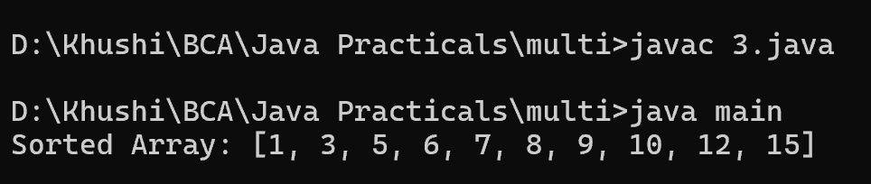

3. Write a Java program that sorts an array of integers using multiple threads.
import java.util.*;
class main {
public static void main(String[] args) throws InterruptedException {
int[] array = {12, 5, 3, 8, 7, 1, 10, 15, 6, 9};
Thread thread1 = new Thread() {
public void run() {
Arrays.sort(array, 0, array.length / 2);
}
};
Thread thread2 = new Thread() {
public void run() {
Arrays.sort(array, array.length / 2, array.length);
}
};
thread1.start();
thread2.start();
thread1.join();
thread2.join();
Arrays.sort(array);
System.out.println("Sorted Array: " + Arrays.toString(array));
}
}
